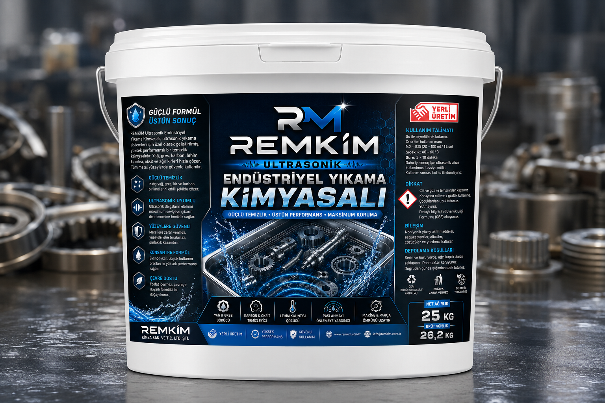

Endüstriyel Yüzey Temizleme Type 3
Ağır yağ, gres ve yoğun proses kirlerinin düşük sıcaklıklarda dahi etkin şekilde uzaklaştırılması amacıyla geliştirilen yüksek performanslı endüstriyel yüzey temizleme çözümü.
Ağır yağ, gres ve yoğun proses kirlerinin düşük sıcaklıklarda dahi etkin şekilde uzaklaştırılması amacıyla geliştirilen yüksek performanslı endüstriyel yüzey temizleme çözümü.

Bazı üretim proseslerinde parçalar, yoğun yağ, gres ve proses kirleri ile yıkama hattına gelir. Bu uygulamalarda temel hedef, yüksek parlaklık elde etmekten ziyade ağır kir yüklerinin güvenilir şekilde uzaklaştırılmasıdır.
REMKİM Endüstriyel Yüzey Temizleme Type 3, yoğun kir yüklerine sahip üretim prosesleri için özel olarak geliştirilmiştir. Formülasyon, 45–80 °C çalışma aralığında ağır yağ ve greslerin etkin şekilde uzaklaştırılmasına odaklanırken, üretim sürekliliğini destekleyen güçlü bir temizlik performansı sunar.
Yoğun yağ, gres ve proses kirlerinin etkin şekilde uzaklaştırılması için optimize edilmiştir.
45–80 °C çalışma aralığında yüksek temizlik performansı sağlar.
45–60 °C çalışma koşullarında dahi güçlü yağ sökme performansı sunar.
Temizlik performansının öncelikli olduğu üretim prosesleri için kararlı çalışma karakteristiği sunar.
Endüstriyel Yüzey Temizleme Type 3; mekanik ön temizliğin yapılmadığı veya parçaların yoğun yağ ve gres yüküyle yıkama hattına geldiği prosesler için geliştirilmiştir. Özellikle ağır kir yüklerinin güvenilir şekilde uzaklaştırılmasının kritik olduğu uygulamalarda yüksek performans sunar.
REMKİM Endüstriyel Yüzey Temizleme ürün ailesi, üretim proseslerinin gerçek çalışma koşulları dikkate alınarak geliştirilmiştir. Type 3; yoğun yağ, gres ve ağır proses kirlerinin bulunduğu, temizlik performansının yüzey parlaklığından daha önemli olduğu uygulamalar için optimum çözüm sunar.
| Ürün | Önerilen Kullanım |
|---|---|
| Type 1 | Hafif kir yükü • Yüksek parlaklık |
| Type 2 | Orta kir yükü • Dengeli temizlik |
| Type 3 | Ağır kir yükü • Maksimum temizleme performansı |
REMKİM, tek bir endüstriyel yıkama kimyasalı ile tüm üretim proseslerine çözüm sunmaya çalışmaz. Her üretim hattının kir yükü, çalışma sıcaklığı, yüzey beklentisi ve sonraki proses gereksinimleri farklıdır. Bu nedenle ürünlerimiz, proses ihtiyaçlarına göre optimize edilmiş mühendislik çözümleri olarak geliştirilmektedir.
Temizlik performansını artırmak kadar, yıkama banyosunun performansını uzun süre koruyabilmek de önemlidir. REMULTRALIFE® Performance Technology, endüstriyel yıkama banyolarının çalışma ömrünü uzatmaya yönelik REMKİM performans teknolojisidir.